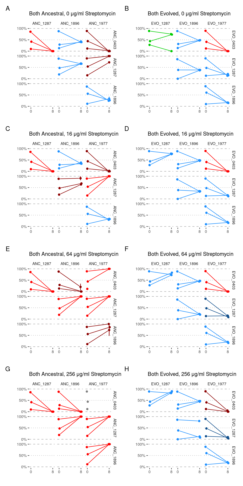
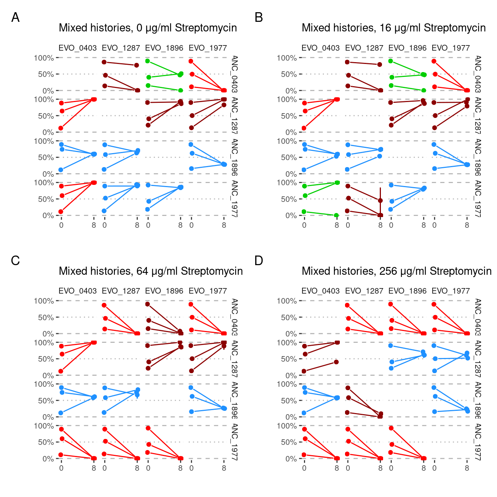
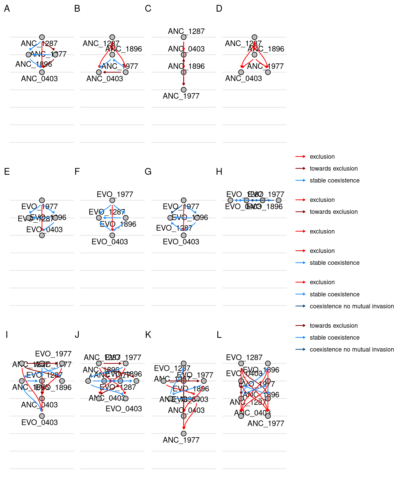
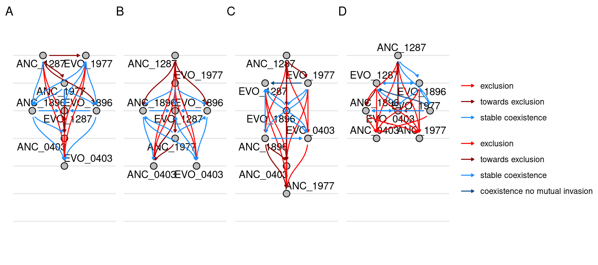

Analysis of pairwise competition
1 Introduction
Contains results from pairs of all streptomycin concentrations and trios for 0 streptomycin
2 Setup
2.1 Libraries
2.2 Global variables
3 Read data
3.1 Species abundances
4 Formatting
4.1 Transfer 0 (starting proportions)
First get abundances from transfer 0 (masterplate)
Show/hide code
format_master <- function(.data){
.data %>%
# make a combined evolution and species identifier and extract the community ID
dplyr::mutate(sp = paste(str_to_upper(evo_hist), str_extract(strainID, "\\d+"), sep = "_"),
community_id = str_extract(sample, "P\\d\\d")) %>%
# this step is important to ensure that when dfs are pivoted wider the
# sp_1 and sp_2 stay consistent
dplyr::arrange(community_id, sp) %>%
# this creates an index for each species present in each community, it is needed
# for the pivot to be consistent between the master plate and the samples
dplyr::group_by(community_id) %>%
dplyr::mutate(n = 1:n()) %>%
dplyr::ungroup() %>%
tidyr::pivot_wider(id_cols = community_id, values_from = c(sp, f), names_from = n) %>%
dplyr::mutate(transfer = 0) %>%
tidyr::expand_grid(strep_conc = c(0, 16, 64, 256)) %>%
arrange(sp_1, sp_2, strep_conc) %>%
arrange(community_id)
} Show/hide code
samp_pairs_fmt_mp_9010 <- samp_pairs_9010 %>%
dplyr::filter(str_detect(community_type, "master")) %>%
format_master()
samp_pairs_fmt_mp_5050 <- samp_pairs_5050 %>%
dplyr::filter(str_detect(community_type, "master")) %>%
format_master() %>%
mutate(community_id = paste0("P", as.numeric(str_extract(community_id, "\\d+"))+48))4.2 Transfer 8 (ending proportions)
Format abundances from the experiment, summarizing over replicates. Here we calculate the median frequency across biological replicates using Hmisc::smedian.hilow which computes the sample median and the outer quantiles (0.025 and 0.975).
Show/hide code
samp_pairs_fmt_exp_9010 <- samp_pairs_9010 %>%
dplyr::filter(community_type == "experiment") %>%
# make a combined evolution and species identifier and extract the community ID
dplyr::mutate(sp = paste(str_to_upper(evo_hist), str_extract(strainID, "\\d+"), sep = "_"),
community_id = str_extract(sample, "P\\d\\d")) %>%
# calculate median and 95% CI across replicates
dplyr::summarize(ggplot2::median_hilow(f), .by = c("community_id", "sp", "strep_conc")) %>%
# rename the y columns as f for compatibility
dplyr::rename_with(.cols = starts_with("y"), \(x) str_replace(x, "y", "f")) %>%
# this step is important to ensure that when dfs are pivoted wider the
# sp_1 and sp_2 stay consistent
dplyr::arrange(community_id, sp, strep_conc) %>%
# this creates an index for each species present in each community, it is needed
# for the pivot to be consistent between the master plate and the samples
dplyr::group_by(community_id, strep_conc) %>%
dplyr::mutate(n = 1:n()) %>%
dplyr::ungroup() %>%
tidyr::pivot_wider(id_cols = c(community_id, strep_conc), values_from = c(sp, f, fmin, fmax), names_from = n) %>%
dplyr::mutate(transfer = 8) %>%
arrange(sp_1, sp_2, strep_conc)Show/hide code
samp_pairs_fmt_exp_5050 <- samp_pairs_5050 %>%
dplyr::filter(community_type == "experiment") %>%
# make a combined evolution and species identifier and extract the community ID
dplyr::mutate(sp = paste(str_to_upper(evo_hist), str_extract(strainID, "\\d+"), sep = "_"),
community_id = str_extract(sample, "P\\d\\d")) %>%
arrange(community_id, strep_conc) %>%
# there is only one replicate so we can't calculate median/mean
dplyr::arrange(community_id, sp, strep_conc) %>%
# this creates an index for each species present in each community, it is needed
# for the pivot to be consistent between the master plate and the samples
dplyr::group_by(community_id, strep_conc) %>%
dplyr::mutate(n = 1:n()) %>%
dplyr::ungroup() %>%
tidyr::pivot_wider(id_cols = c(community_id, strep_conc), values_from = c(sp, f), names_from = n) %>%
dplyr::mutate(transfer = 8) %>%
arrange(sp_1, sp_2, strep_conc) %>%
arrange(community_id) %>%
mutate(community_id = paste0("P", as.numeric(str_extract(community_id, "\\d+"))+48))5 Define competition outcomes
5.1 Binomial sampling and Wilcox test
First need to determine which samples significantly decreased/increased from T0 to T8. We don’t have enough biological replicates for to compute a statistic across replicates for outcome variability. However, we can estimate the mean fraction of A and quantify the inferential uncertainty of the mean by bootstrap resampling. We the used median proportion of species A from two biological replicates of each T8 pair as the probability of success (i.e., drawing species A) from 1000 draws (i.e., sequencing reads) from the binomial distribution. To determine whether the frequency of Species A significantly changed from T0 to T8, the means of the 1000 binomial draws for T0 and T8 were compared using a Wilcoxon rank sum test (N = 2000). Tests with Bonferroni multiple test corrected p values < 1e-5 were considered to represent significantly different T0 and T8 samples.
Show/hide code
wc_test <- function(df1, df2){
# first join the T0 and T8 abundances
left_join(df1, df2, by = join_by(community_id, strep_conc, sp_1, sp_2)) %>%
dplyr::mutate(delta_f_1 = f_1.x - f_1.y) %>%
dplyr::select(community_id, strep_conc, sp_1, sp_2, delta_f_1, f_1_8 = f_1.x, f_1_0 = f_1.y,
f_2_8 = f_2.x, f_2_0 = f_2.y) %>%
tidyr::nest(data = c(-community_id, -strep_conc)) %>%
# samples 1000 draws from binomial distribution using f_a median as the probability of success
dplyr::mutate(f_1_0_rs = purrr::map(data, \(x) map(1:100, \(i) sum(rbinom(1000, 1, x$f_1_0))/1000)),
f_1_8_rs = purrr::map(data, \(x) map(1:100, \(i) sum(rbinom(1000, 1, x$f_1_8))/1000))) %>%
tidyr::unnest(cols = c(data, f_1_0_rs, f_1_8_rs)) %>%
# nest the samples
tidyr::nest(bs = c(f_1_0_rs, f_1_8_rs)) %>%
# perform the wilcox test
dplyr::mutate(wc = purrr::map(bs, \(i) wilcox.test(x = as.numeric(i$f_1_0_rs), y = as.numeric(i$f_1_8_rs)))) %>%
# tidy-ify the test output
dplyr::mutate(tidy_wc = purrr::map(wc, \(x) broom::tidy(x))) %>%
tidyr::unnest(cols = c(tidy_wc)) %>%
# p-value adjust using bonferroni correction
dplyr::mutate(p_adjusted = p.adjust(p.value, method = "bonferroni", n = n())) %>%
dplyr::arrange(strep_conc, sp_1, sp_2) %>%
# define whether change is significantly positive or negative
dplyr::mutate(change = dplyr::case_when(p.value > 1e-5 ~ 0,
sign(delta_f_1) == -1 & p.value <= 1e-5 ~ -1,
sign(delta_f_1) == 1 & p.value <= 1e-5 ~ 1))
}run the tests
5.2 Competition outcome rules
Here we set up the rules for defining the competition outcomes. In the pairwise competition experiments each species and evolutionary form was competed against all other species and evolutionary forms (excluding evolutionary forms of the same species because these cannot be resolved using amplicon data). Each competitor in a pair \(\{A, B\}\) was allowed to invade from rare (\(f^{R} = 0.1\)) while the other competitor was common (\(f^{C} = 0.9\)) in duplicate for 8 growth cycles. Additionally we completed one experiment where each strain in the pair was started at roughly equal density. This resulted in 6 experiments for each competing pair. Using the abundance outcomes from both replicates of each the pairwise competition experiments for each pair we classified outcomes as “exclusion”, “towards exclusion”, “stable coexistence”, “coexistence without evidence for mutual invasion”, or “inconclusive” according to the following criteria (also see: https://www.science.org/doi/10.1126/science.adg0727)
5.2.1 Exclusion
Requires one species (\(A\)) in a pair to be excluded (\(f_{A} = 0\)) in all 6 experiments for the species pair.
5.2.2 Towards Exclusion
Relaxes the condition that (\(f_{A} = 0\)), but requires one species in a pair to have a significant decrease (\(\Delta f_{8-0} < 0\)) (Wilcoxon Test) in all 6 experiments for the species pair.
5.2.3 Stable Coexistence
Both species \(A\) and \(B\) can stably coexist if each species can invade the other from low frequency \(A_{f_{A} < f_{B}} \rightarrow B \vee B_{f_{B} < f_{A}} \rightarrow A\). Assignment of stable coexistence was made by comparing \(sgn(\Delta f_{8-0}) = sgn(\bar{f_{8}} - f_{0})\) where \(\bar{f_{8}}\) is the mean frequency of the species at the final sampling timepoint across all 6 experiments.
5.2.4 Coexistence without evidence for mutual invasion
This outcome was assigned when each species had a non-zero frequency \(f_{A|B} > 0\) in all 6 experiments at the final time point.
5.2.5 Inconclusive
This outcome was assigned when none of the above conditions were met.
Show/hide code
outcomes_classified <- bind_rows(wc_test_9010, wc_test_5050) %>%
arrange(sp_1, sp_2, strep_conc) %>%
group_by(sp_1, sp_2, strep_conc) %>%
mutate(outcome = case_when(
# condition 1
sum(f_1_8 == 0) == n() | sum(f_1_8 == 1) == n() ~ "exclusion",
# condition 2
sum(change) == n() | sum(change) == -n() ~ "towards exclusion",
# condition 3
sum(sign(f_1_8 - f_1_0) == sign(mean(f_1_8)-f_1_0)) == n() ~ "stable coexistence",
# condition 4
sum(f_1_8 > 0) == n() ~ "coexistence no mutual invasion",
# all others are inconclusive
TRUE ~ "inconclusive"
)) %>%
dplyr::ungroup()EVO_1287 and EVO_1977 at 256 ug/ml streptomycin technically fullfill the requirements for the outcome “towards exclusion.” However, the patterns at 64 and 16 ug/ml suggest that it could also be “coexistence no mutual invasion.” Assigning coexistence no mutual invasion would break an intransitive loop apparent in the pairs network.
5.3 Plotting pairwise outpcomes
Construct final dataframe to be used for plotting
Show/hide code
samp_pairs_fmt <- dplyr::bind_rows(samp_pairs_fmt_mp_9010, samp_pairs_fmt_mp_5050, samp_pairs_fmt_exp_9010, samp_pairs_fmt_exp_5050) %>%
dplyr::mutate(
group = interaction(community_id, strep_conc),
evo_group = dplyr::case_when(
dplyr::if_all(c(sp_1, sp_2), \(x) stringr::str_detect(x, "ANC")) ~ "both_anc",
dplyr::if_all(c(sp_1, sp_2), \(x) stringr::str_detect(x, "EVO")) ~ "both_evo",
TRUE ~ "mix"
)
) %>%
dplyr::left_join(outcomes_classified,
by = dplyr::join_by(sp_1, sp_2, strep_conc),
relationship = "many-to-many") %>%
dplyr::mutate(
outcome = factor(outcome, levels = c("exclusion",
"towards exclusion",
"stable coexistence",
"coexistence no mutual invasion",
"inconclusive"))
) Create different lists of plots for the mixed (i.e. evo competed against anc) conditions
Show/hide code
samp_pairs_fmt_plots_split_a <- samp_pairs_fmt %>%
dplyr::filter(evo_group != "mix") %>%
dplyr::group_by(strep_conc, evo_group) %>%
dplyr::group_split() %>%
purrr::map(pair_plot)
samp_pairs_fmt_plots_split_b <- samp_pairs_fmt %>%
dplyr::filter(evo_group == "mix") %>%
dplyr::group_by(strep_conc) %>%
dplyr::group_split() %>%
purrr::map(pair_plot)
NOTE: in panel E (64 µg/ml streptomycin, ANC_0403 vs ANC_1977) both replicates survived with OD ~ 0.15 when ANC_0403 was started from 90% abundance but not when it was started at 10% abundance (OD ~ 0.04). In all replicates of 90%/10% starting abundance ANC_1977 was driven extinct.

6 Network
Here we will plot the pairwise competition outcomes as a network. NOTE: I don’t have time/energy to figure out how to manage all the links in the networks so that they line up properly and don’t overlap so there will need to be some postprocessing in inkscape to move some of the links so they don’t overlap.
6.1 Evolution and Streptomycin categories separate
Here we plot a separate graph for each streptomycin concentrations and also by different evolutionary groupings. For example, there is one graph for the competition outcomes of only ancestral species, there is one graph of the outcomes of only evolved species, and there is one graph for the outcomes of mixed competitions where an ancestral species competes against an evolved species.
Show/hide code
nodes1 <- make_nodes(samp_pairs_fmt, evo_group, strep_conc)
edges1 <- make_edges(samp_pairs_fmt, evo_group, strep_conc)
graphs1 <- nest(nodes1, sps = -c(evo_group, strep_conc)) %>%
left_join(nest(edges1, pairs = -c(evo_group, strep_conc)),
by = join_by(evo_group, strep_conc)) %>%
mutate(network = map2(sps, pairs, function(sps, pairs) tbl_graph(nodes = sps, edges = pairs, directed = T))) %>%
mutate(plot = map(network, function(network) plot_network_hierarchy(network, tune_angle = 1.5, n_rank = 7, n_break = 7)))
6.2 Only Streptomycin category separate
Show/hide code
nodes2 <- make_nodes(samp_pairs_fmt, strep_conc)
edges2 <- make_edges(samp_pairs_fmt, strep_conc)
graphs2 <- nest(nodes2, sps = -c(strep_conc)) %>%
left_join(nest(edges2, pairs = -c(strep_conc)),
by = join_by(strep_conc)) %>%
mutate(network = map2(sps, pairs, function(sps, pairs) tbl_graph(nodes = sps, edges = pairs, directed = T))) %>%
mutate(plot = map(network, function(network) plot_network_hierarchy(network, tune_angle = 1.5, n_rank = 7, n_break = 7)))